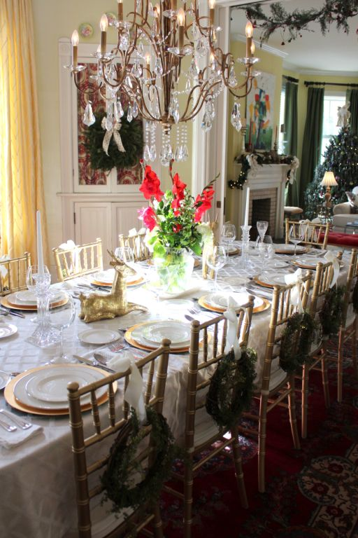

.png)
.PNG)
.PNG)
.PNG)
.PNG)
.PNG)
.JPG)
.JPG)
.PNG)
.PNG)


 But as the Queen of Lateness here, I just had to show you this one last Christmas tour house…this one that was my favorite.
But as the Queen of Lateness here, I just had to show you this one last Christmas tour house…this one that was my favorite.
If you are tired of all the Christmas decor, then just ignore it and look at the beautiful rooms. Â It really is a gorgeous old house that has had a wonderful restoration job. Â My mother’s favorite room was the dining room. She oooohed and ahhhed around that table a few times.
 The cozy little breakfast area was more my style.
The cozy little breakfast area was more my style.
And I especially loved that cabinet there in the corner.
This was the house with the red bicycle in the hall. 🙂
I lost count of how many bedrooms there are in the house.
Definitely a room for boys here.
And one precious one for girls.
I believe this was the room my husband liked, and you can see why.
I think this was the master bedroom. Â It looked like a room for peace and quiet.
The master bath was just perfection.
You can see that the laundry room is right off the bathroom.The icing on the cake was this outdoor room with its fireplace and television.
Did you like it? Thank you for allowing me to indulge in one last Christmas tour with you. Â Since sickness has delayed us so much this year, I feel like we are just starting Christmas here….which is quite alright with me since I would love it year round. I still have Christmas music playing. Â I am still decorating for the holiday, and we have company coming today. Â Hope your weekend is a fun one…and that you are still enjoying the season.
Merry Christmas! 🙂


.PNG)
All I have to say is stunning! That house was quite lovely. Thank you for the wonderful tour. My favorite pictures by far were of the red bicycle, master suite, and master bath. First off, I loved the bike! What a festive but unorthodox idea! Very unique indeed. And the master suite, oh my! What a site it is! The bathroom is indeed perfection and I love that the laundry room is attached!
Thanks for the pics of all the homes on tour…fun to see how the other half lives.
If ever the day comes that all your friends desert you (never) or your family forsakes you (ha) or you find yourself ‘lost’ in this world (double ha)…I’ll be your best bud, your BFF, or your extra sister. Your posts always lift my spirits and bring beauty into my world that needs more. Wishing you a belated joyful Christmas and a Happy and Healthy New Year.
Yes! I loved it. Although I’d want an antique bed in the master. Oh, and which room to spend most of my time in???? That dining room was lovely. Thanks for sharing and I don’t think the Christmas décor should go up in November nor come down the day after Christmas. We usually have snow AFTER Christmas, so I especially enjoy the decorations when there is the white background to set them off. I have the tree lights on right now even though there is a lot of sunlight on this chilly day, brrrr. Glad you had a wonderful, low key, kind of holiday, and here’s wishing you and all your family, the very best in 2015!
Kelly-I enjoyed the tours! I have been reading your blog for a few month now.. We are in the process of building a home and I visit your blog frequently for inspiration, so I thought I would say hello from Alabama! Hope you have a very happy new year!
What a wonderful home and fun tour! Love the dining room – perfect for family holiday dinners and the master bedroom…gorgeous. Wishing you all the best in the new year!!
Kelly – I enjoyed the home tour and I still have my decorations up but had to take down my tree because my son got a new puppy for Christmas and she was chewing the wires! Happy New Year! Can’t wait to see what houses we visit next year.
Kelly,
What a pretty house. I can see why you like it.
I will have my Christmas decorations up until next weekend. We have our Austin family and I am enjoying the tree with my granddaughter!
Happy New Year…the year has flown by but I’ve enjoyed each and every month reading your blog.
xo,
Karen
Wow, my favorite thing is that gorgeous dining room chandelier!
I loved the breakfast area too, but my favorite was the dreamy yellow bedroom with the chaise longue. How I would love one of those to curl up and read in…sigh. Happy New Year to you and your family, I cannot tell you how much I enjoy your posts.
This was so much more my style! The others were pretty, but just not me! I love the fireplace on the porch. I love to look at Christmas all year and plan. Of course, when it actually comes to the decorating, all my planning goes out the window. haha
I loved this house and was not tired of the Christmas decor at all! It as lovely to read that you toured the home with your mother. When my mother was living this was exactly the type of thing she enjoyed very much so this was a nice reminder for me..:) I hope you are blessed to enjoy many more outings together. Happy New Year!
Kelly, I Never get tired of Christmas and all its color and meaning. Thanks for sharing this home today. While large it seems so easy to live in. A home, not just a house. Will put this post in my Christmas file to refer to next season for ideas.
We are receiving a wonderful snowfall at this very moment…light, fluffy…..covering every twig. So welcome. So beautiful. So quiet. A new friend sent the link below to top out the season. Hope you find it as delightful and sweet as I did.
https://www.youtube.com/embed/kWq60oyrHVQ?rel=0
I can see why this was your favorite home on the tour. The buffalo checks screamed “Kelly!” I wonder if I can get my husband to put beadboard in my laundry bath this year.
Thanks Kelly! I enjoyed touring this home. It is so cozy and looks like a home loved and lived in!
It’s still Christmas around here! Thanks for sharing this & keeping the holiday spirit going.
Kelly…..I am still sitting here in our living room with the Christmas tree lights on…… I can’t put it all away that quickly (although I do have my Christmas dishes washed and put away….) I can’t tell you how much I enjoyed this tour. It was my favorite too! I loved how gorgeous the rooms are without being so formal…..perfection!
Happy New Year!
We are still waiting on Christmas at our home! Family starts coming in today and we should all be here and have our version of Christmas by Tuesday. All of my children live away and they work hard at coordinating an “at home” Christmas. I have the best kids ever! Enjoy the rest of your break!
Kelly,
Thank you for sharing this lovely home with us. I know the bicycle is your favorite. It has two baskets on it and it is red! My favorite is the sitting area in the kitchen area. I love it when there is an area in the kitchen to sit that is not the table or the bar area. A small couch or reading chair just says “we live here and it is comfortable.” My second favorite thing about this lovely home is all of the fireplaces. I love fireplaces! I hope you are rested and feeling well for your continued Christmas celebration. Don’t think for a moment that Christmas has stopped here either. I am still sipping Christmas coffees/teas and playing Christmas music and movies. Our decorations and trees will stay up until after the Epiphany.
I too love the breakfast nook, definitely more my style. Cozy. Loved the boys room too! I don’t take my decorations down until January 1st, but by then I’m beyond ready to pack them up. Hugs to you!!!
Lovely home, and I too love the breakfast area! We took down the outside decor yesterday, since we rely on son in law. He wanted to do it while it was warm, and we can’t look a gift horse in the mouth, right? The tree is still up though, so I can enjoy it thru New Years Day.
Hope you had a nice Christmas and I’m glad you are feeling better!
I love Christmas all year round!! Loved this tour! Especially the dining room, red bike and the girl’s bedroom. Granddaughter is moving back home and I want to get her a day bed like that for her room. Starting to take outdoor decorations down so we can “move” to the condo for a couple of months! What do you think? Love walking on the beach and enjoying our retirement! Enjoy your day and company! Let’s keep the Spirit of Christmas as long as we can into the new year!
Thanks for the tour! Great house! I do still have Christmas decorations up…but I suppose they will have to come down one of these days….just not today! I’m still enjoying Christmas! 😉
Yes, I agree with your mother, the dining room is awesome. I would love a long rectangular table. I have been trying to pawn ours off to my daughter. Enjoy your holidays. We keep our trees and decor through Jan. 8th. Luckily for my preference, I chose more winters decor than Christmasy. The past three days have been in the fifties here in Ohio which has made me very happy.
Hi Kelly, Merry Christmas still! Thanks for the lovely tours. So happy you are feeling better. I’m looking forward to hearing all about your exciting 2015!